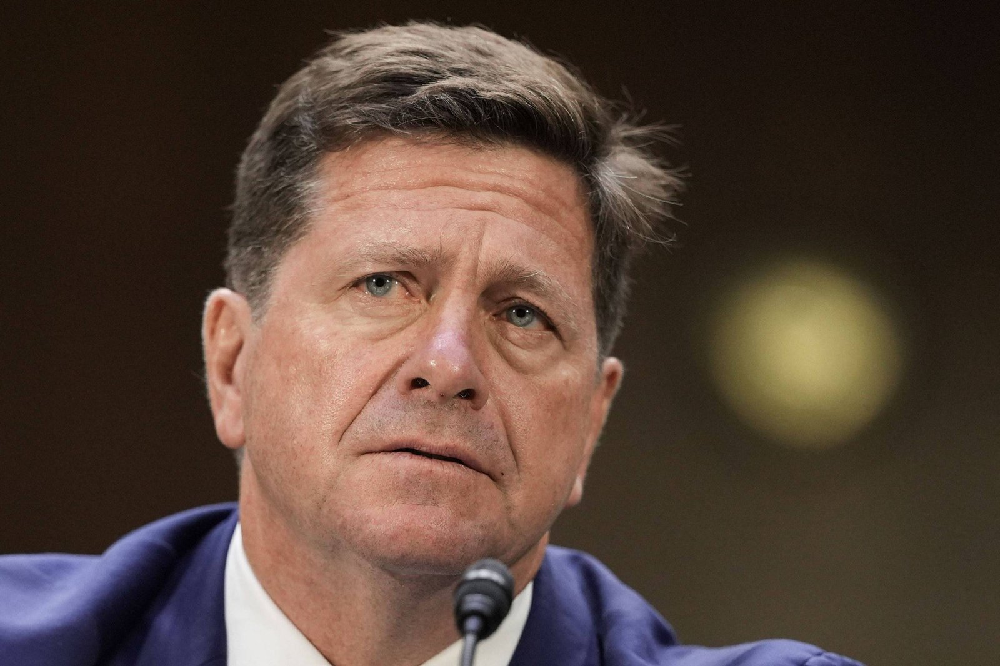

Trump nomeia Jay Clayton para comandar a ‘Força de Superinteligência’ da Casa Branca
Chefe da inteligência nacional terá 120 dias para entregar relatório sobre riscos e oportunidades da IA, em meio a alertas de pesquisadores.

O presidente dos Estados Unidos, Donald Trump, indicou neste domingo (4) o diretor de inteligência nacional, Jay Clayton, para chefiar uma nova força-tarefa da Casa Branca dedicada à inteligência artificial, batizada de Força de Superinteligência. O anúncio foi feito na Truth Social, segundo a Folha.
Pela descrição de Trump, o grupo vai coordenar os esforços do governo federal para manter a liderança americana em superinteligência e proteger os interesses da população. A nova área terá 120 dias para apresentar um relatório sobre riscos e oportunidades da tecnologia. Ao Wall Street Journal, Clayton disse que “o risco de não chegar primeiro é alto”.
A equipe vai examinar os riscos ligados à IA e os mecanismos que o governo já tem para notificação de violações, invasões cibernéticas e outros incidentes, além de sugerir formas de reforçar a capacidade de resposta federal com base em autoridades já existentes.
A nomeação ocorre num momento em que a segurança da IA ganhou peso no debate, com pesquisadores alertando para perigos sérios e parlamentares dos dois partidos pedindo ação. Trump, porém, mantém uma linha menos intervencionista, alegando que regras em excesso prejudicariam a disputa com a China. Clayton é o segundo “czar da IA” do mandato, depois do investidor David Sacks.